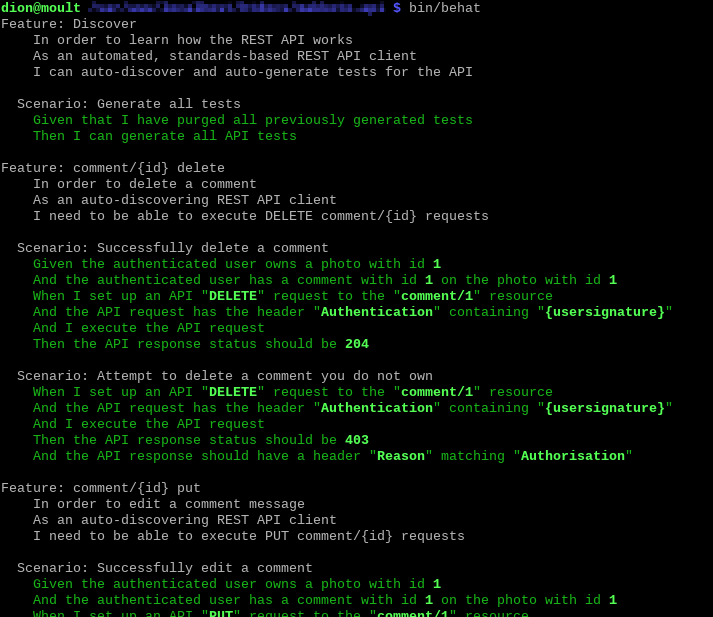

For the past few months, one of the projects I've been working on with SevenStrokes involves building a REST API for a service. REST APIs are tricky things to get right: they're deceptively simple to describe, yet play host to plenty of interesting topics to delve into. Such topics can be statelessness, resource scope, authentication, hypermedia representation and so on.
However I'm going to only talk about the very basics (which many people overlook), and demonstrate how the Richardson Maturity Model can help with automated testing and documentation. If you haven't heard of RMM yet, I recommend you stop reading and go through it now (especially if you've built a REST-like API before).
Let's say our REST API conforms to a level 3 RMM: we have a set of standardised verbs, querying logical resources, receiving standardised status codes, and being able to navigate the entire system via links. We've got a pretty good setup so far. All these items in the RMM help our REST API system scale better. However what is doesn't yet help with is keeping our documentation up to date. This is vital, because we know that the holy grail for REST API is an auto-generated, always up-to-date, stylish documentation that promotes your site/product api. There's a bunch of tools that help you do this right now, but I think they're all rather half-baked and used as a bolt-on rather than a core part of your application.
To solve this, I'm going to recommend one more addition: every
resource must have the OPTIONS verb implemented. When invoked, it will
respond with the following:
- An
Allowheader, specifying all the other verbs available on the invoked resource. - A response body, containing the verbs, and under them in the
hierarchy of the body (in whatever format), a description of:
- Their input parameters, including type, and required boolean
- A list of example requests and responses, detailing what headers, parameters and body are included in the request, and what headers, status code and body is included in the response.
- A list of assumptions that are being made for each example scenario (if applicable)
- A list of effects on the system for each example scenario (if applicable)
- A list of links to any subresources with descriptions
Let's see a brief example:
# OPTIONS /user/
{
"GET": {
"title": "Get information about your user",
"parameters": {
"foobar": {
"title": "A description of what foobar does",
"type": "string",
"required": false
},
[ ... snip ... ]
},
"examples": [
{
"title": "View profile information successfully",
"request": { "headers": { "Authentication": "{usersignature}" } },
"response": {
"status": 200,
"data": {
"id": "1",
"username": "username1",
[ ... snip ... ]
}
}
},
[ ... snip ... ]
]
},
[ ... snip ... ]
"_links": {
"self": {
"href": "\/makkoto-api\/user"
},
[ ... snip ... ]
}
}
Sound familiar? That's right. It's documentation. Better than that, it's embedded documentation. Oh, and better still, it's auto-discoverable documentation. And if that isn't great enough, it's documentation identical to the format of requests and responses that API clients will be working with.
Sure, it's pretty nifty. But that's not all! Let's combine this with TDD/BDD. I've written a quick test here:
Feature: Discover
In order to learn how the REST API works
As an automated, standards-based REST API client
I can auto-discover and auto-generate tests for the API
Scenario: Generate all tests
Given that I have purged all previously generated tests
Then I can generate all API tests
That's right. This test crawls the entire REST API resource tree (starting at the top-level resource, of course), invokes OPTIONS for each resource, and generates tests based on the documentation that you've written.
Let's see a quick demo in action.

It's a really great workflow: write documentation first, generate tests from it, and then zone in on your tests in detail. This ensure that your code, tests and documentation are always in sync.
I hope someone finds this useful :) For the curious, the testing tool is Behat, and output format used is application/hal+json, using the HAL specification for linking, and link URI templates.